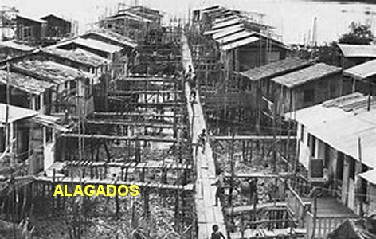
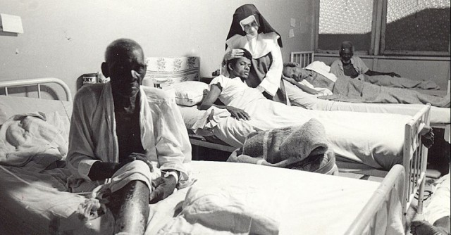
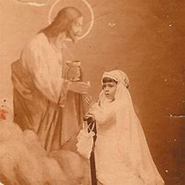
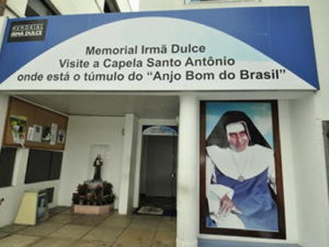
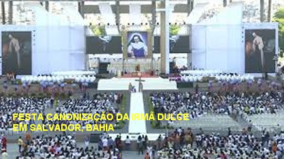

FOTOGRAFIAS







CONVITE
Este Site foi construído pelo Apostolado dos Sagrados Corações. Clique aqui ou no endereço abaixo para visitar o nosso PORTAL. Nele encontrará uma apreciável quantidade de Sites sobre o CRIADOR, o ESPÍRITO SANTO, JESUS DE NAZARÉ, sobre NOSSA SENHORA, os ANJOS DO SENHOR e Sites que apresentam a Vida e Obra de diversos SANTOS. Todos eles elaborados com muita dedicação, sobretudo, fundamentados na Sagrada Escritura, na Tradição Cristã, na Vida e Obra dos Santos e nas Manifestações Sobrenaturais, com a intenção de informar somente a Verdade.
http://www.apostoladosagradoscoracoes.com/
PARA SE COMUNICAR CONOSCO, UTILIZE OS E-MAIL ABAIXO:
contato@apostoladosagradoscoracoes.com.br
contato@apostoladosagradoscoracoes.com.br
FIRMAS QUE DIVULGAM O SITE